Menjadikan Surabaya sebagai pusat ekonomi di Indonesia melalui pengembangan ekonomi yang inovatif dan berkelanjutan, dengan memanfaatkan teknologi modern, energi terbarukan, dan potensi ekonomi kreatif.
Undang-Undang No. 1 Tahun 1987
Mitra Strategis Dunia Usaha Kota Surabaya.
Kamar Dagang dan Industri (Kadin) Indonesia berdiri sebagai wadah tunggal dan payung utama bagi seluruh pelaku dunia usaha di Indonesia, baik Usaha Milik Negara (BUMN), Usaha Milik Swasta (BUMS), maupun Koperasi.
Kehadiran Kadin ditegaskan melalui Undang-Undang Nomor 1 Tahun 1987 tentang Kamar Dagang dan Industri, yang menetapkannya sebagai mitra strategis pemerintah dalam membina, mengomunikasikan, serta memperkuat ekosistem perdagangan dan investasi nasional.
Sebagai chamber of commerce, Kadin memiliki peran vital dalam menyatukan potensi ekonomi daerah, memperluas jejaring bisnis antardaerah maupun internasional, serta memfasilitasi terciptanya iklim usaha yang kondusif. Semangat inilah yang menjadi pelecut lahirnya kepengurusan Kadin di level daerah, termasuk di Kota Surabaya sebagai pusat pertumbuhan ekonomi kawasan timur Indonesia.
Visi & Misi KADIN Surabaya
- Memperkuat kolaborasi antara pemerintah, sektor swasta, dan masyarakat untuk mempercepat transformasi digital dan inovasi di berbagai sektor.
- Memfasilitasi digitalisasi UMKM agar dapat mengembangkan usaha dan menjangkau pasar yang lebih luas, baik di dalam negeri maupun internasional.
- Mendorong pembangunan infrastruktur yang ramah lingkungan, termasuk pengembangan Green Economy Hub yang mendukung energi terbarukan dan pengurangan emisi karbon.
- Mendorong ekonomi berkelanjutan melalui pemanfaatan teknologi dan energi terbarukan untuk meningkatkan daya saing bisnis sekaligus menjaga kelestarian lingkungan.
Perjalanan dan Milestones KADIN Surabaya
KADIN Surabaya resmi berdiri pada tahun 1982 untuk merespons pesatnya pertumbuhan perdagangan dan industri di Kota Pahlawan. Sejak awal berdirinya, KADIN Surabaya dipimpin oleh tokoh-tokoh visioner yang secara konsisten meletakkan fondasi kuat bagi kemajuan dunia usaha lokal.
Rekam Jejak Kepemimpinan
-
1982–1987
H. Tubagus Mochtar Atmadja
Ketua pertama KADIN Surabaya yang meletakkan batu pertama organisasi.
-
1987–1997
Gatot Bambang Santosa
Memimpin dua periode berturut-turut untuk memperkuat struktur organisasi dan sinergi pelaku usaha lokal.
-
1997–2004
H. Makmur Wibowo
Mengawal stabilitas dunia usaha Surabaya melewati dinamika ekonomi di era reformasi.
-
2004–2009
Ir. H. Muhammad Rudiansyah
Mendorong modernisasi layanan dan pembinaan sektor perdagangan daerah.
-
2009–2019
Dr. Ir. Jamhadi, MBA
Memimpin dua periode dengan fokus pada akselerasi investasi dan daya saing industri Kota Surabaya.
-
2019–2029
H. M. Ali Affandi LNM
Memimpin transformasi digital, penguatan UMKM, serta pengembangan ekonomi inovatif yang berkelanjutan dalam dua periode.
Perjalanan Sekretariat
-
1982–1995
Jl. Kembang Jepun No. 25–27
Beraktivitas dan berkantor pertama kali di kawasan perdagangan bersejarah. Saat ini, Gedung Ex-Kantor KADIN Surabaya ditetapkan sebagai Bangunan Cagar Budaya oleh Pemerintah Kota Surabaya.
-
1995–2019
Jl. Ngagel Jaya Selatan, Komplek RMI Blok C No. 25
Berpusat di kawasan niaga Surabaya. Diresmikan oleh Wali Kota Surabaya pada masa itu dan menjadi pusat pergerakan kamar dagang dan industri kota Surabaya di era reformasi.
-
2019–Sekarang
Graha Kadin, Jl. Bukit Darmo Raya No. 1
Berkedudukan di Komplek Perkantoran Graha Kadin, Surabaya, sebagai pusat kolaborasi dan inovasi bisnis masa kini, serta menjadi satu kawasan dengan kantor KADIN Provinsi Jawa Timur dan KADIN Institute Jawa Timur.
Dewan Pengurus KADIN Surabaya
Kepengurusan periode 2024–2029 yang terdiri dari para usaha dan profesional lintas sektor untuk memperkuat kolaborasi serta mendorong kemajuan ekonomi Kota Surabaya.
Pemimpin Muda, Visioner, dan Penggerak Ekosistem Bisnis Kota Surabaya
H. M. Ali Affandi La Nyalla Mahmud Mattalitti, yang akrab disapa Mas Andi, adalah pemimpin muda visioner yang mendedikasikan kiprahnya untuk kemajuan dunia usaha dan penguatan ekosistem ekonomi Jawa Timur, khususnya Kota Surabaya. Sebagai Ketua KADIN Surabaya, beliau berfokus pada kolaborasi dunia usaha, pemberdayaan UMKM, serta pertumbuhan ekonomi yang inklusif dan berkelanjutan.
Dengan latar belakang pendidikan Sarjana Manajemen dari Universitas Airlangga dan Magister Manajemen Teknologi dari Institut Teknologi Sepuluh Nopember Surabaya, beliau memadukan wawasan akademis, pemikiran strategis, serta pengalaman praktis di lapangan untuk mendorong pertumbuhan ekonomi yang inklusif, inovatif, dan berkelanjutan.
Lahir dan tumbuh di lingkungan dunia usaha yang kental, Mas Andi mengasah jiwa kewirausahaannya sejak usia muda. Beliau memiliki rekam jejak profesional di berbagai lini bisnis swasta, mulai dari sektor media, perdagangan, hingga industri dan jasa.
Dalam menjalankan bisnisnya, beliau memegang teguh prinsip kepemimpinan yang adaptif terhadap perkembangan zaman, responsif terhadap arus digitalisasi, serta berorientasi pada penciptaan nilai (value creation) yang memberi dampak nyata bagi masyarakat dan lingkungan sekitar.
Kiprah di HIPMI
Perjalanan kepemimpinan Mas Andi di organisasi kemasyarakatan dan dunia usaha ditempa secara matang di HIPMI:
- Ketua Umum BPD HIPMI Jawa Timur (2011–2014). Dipercaya memimpin organisasi pengusaha muda tingkat provinsi di usia yang sangat muda. Di bawah kepemimpinannya, BPD HIPMI Jatim aktif mencetak wirausahawan baru, memperluas akses pembiayaan usaha, serta membangun jejaring bisnis antarwilayah.
- Kepemimpinan Skala Nasional. Kiprah dan integritasnya di tingkat nasional terbukti ketika beliau dipercaya menjabat sebagai Ketua Organizing Committee (OC) Munas XVII HIPMI pada tahun 2022, sebuah agenda akbar nasional yang mempertemukan para pengusaha muda dari seluruh pelosok Nusantara.
- Pemberdayaan Pemuda & Digitalisasi. Beliau konsisten mendorong generasi muda untuk bertransformasi dari pencari kerja menjadi pencipta lapangan kerja (job creator) melalui pelatihan digitalisasi usaha, kurasi produk, dan pembukaan akses pasar.
Kepemimpinan dan Legacy di KADIN Surabaya
Dipercaya melanjutkan tongkat estafet kepemimpinan di Kamar Dagang dan Industri (Kadin) Kota Surabaya, Mas Andi membawa warna baru yang dinamis dan berorientasi masa depan:
- Ketua Umum Kadin Surabaya Periode I (2019–2024). Terpilih secara aklamasi menggantikan kepengurusan sebelumnya. Beliau menggerakkan Kadin Surabaya untuk merespons tantangan era digital dan pemulihan ekonomi pascapandemi.
- Ketua Umum Kadin Surabaya Periode II (2024–2029). Kembali dipercaya secara aklamasi dalam Musyawarah Kota (Muskota) Kadin Surabaya untuk memimpin pada periode kedua.
- Fokus Ekonomi Inovatif & Berkelanjutan. Mengusung agenda penguatan ekonomi hijau (green economy), integrasi teknologi digital untuk UMKM, ekspansi misi dagang antardaerah maupun internasional, serta penguatan kemitraan strategis dengan Pemerintah Kota Surabaya dan para diplomat asing/investor global.
“Pertumbuhan ekonomi yang sejati adalah pertumbuhan yang inklusif—di mana pelaku usaha besar, menengah, hingga UMKM dapat tumbuh bersama, saling menguatkan, dan beradaptasi dengan perubahan zaman.”
Sebagai Ketua Umum Kadin Surabaya, HM Ali Affandi LNM terus berkomitmen menjadikan Kadin Surabaya sebagai rumah kolaborasi yang terbuka, solutif, dan berdampak bagi seluruh pelaku usaha demi mewujudkan Surabaya sebagai hub bisnis dan perdagangan kelas dunia.
Wakil Ketua Umum 2024–2029
-
Medy Prakoso
Wakil Ketua Umum Bidang Perdagangan Barang, Jasa & Logistik
-
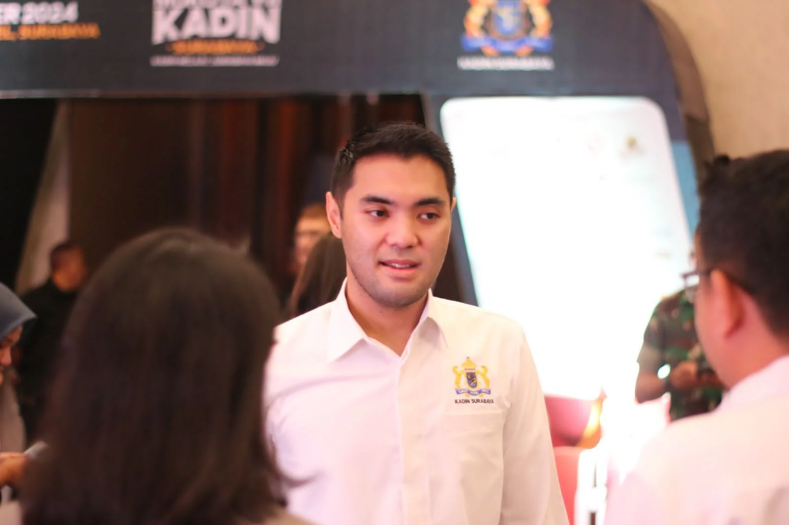
ARDITTO GRAHADI, S.IP., M.M
Wakil Ketua Umum Bidang Sumber Daya Manusia, Ketenagakerjaan & Vokasi
-
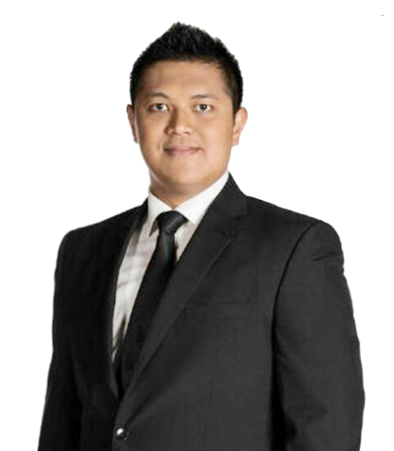
Hendy Setiono
Wakil Ketua Umum Bidang UMKM
-
H. ROHMAD AMRULLAH, S.H., MH
Wakil Ketua Umum Bidang Organisasi & Keanggotaan
-
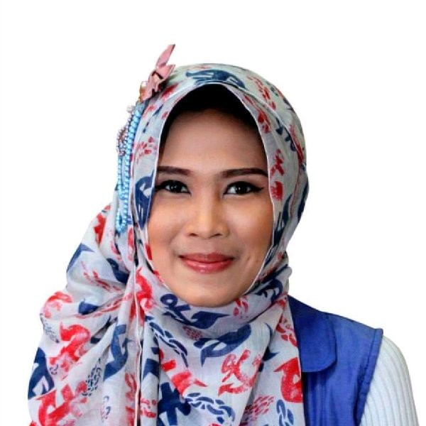
ARFA DAROJATI, S.Sos., M.Med.Kom
Wakil Ketua Umum Bidang Investasi, Keuangan & Perbankan
-
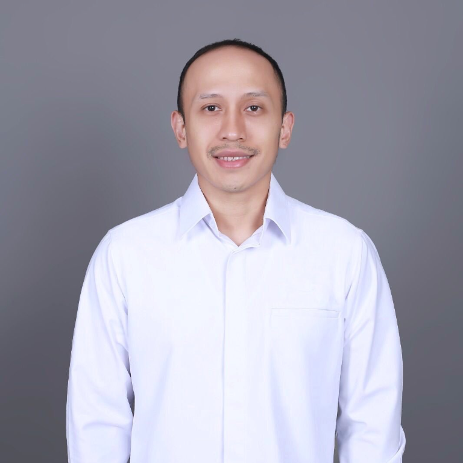
DENNY YAN RUSTANTO
Wakil Ketua Umum Bidang UMKM, Kewirausahaan & Ekonomi Kemasyarakatan
-
ARDHI FAHYUDI
Wakil Ketua Umum Bidang Industri, Energi & Sumber Daya
-
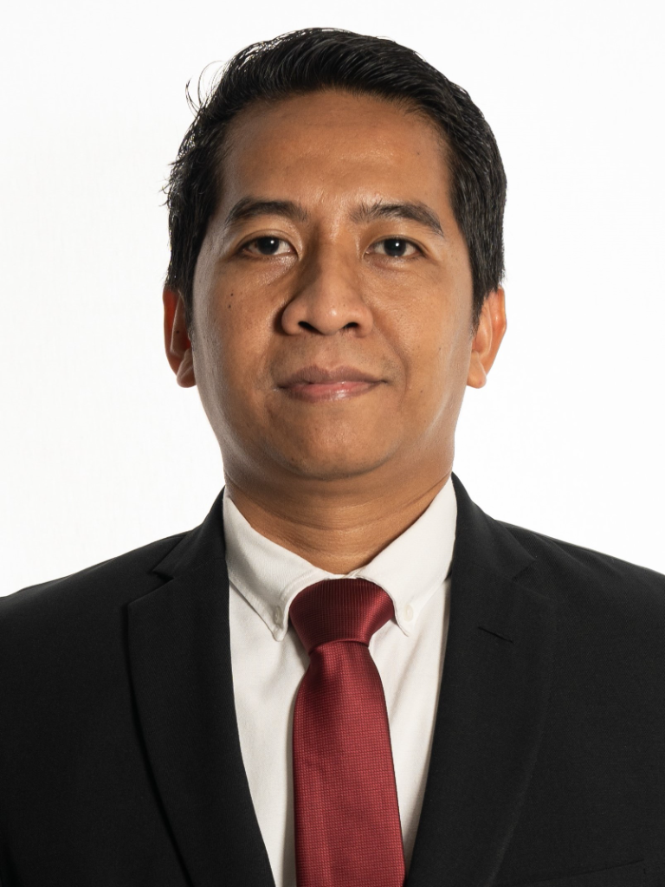
M. ERI IRAWAN
Wakil Ketua Umum Bidang Infrastruktur, Perhubungan & Pembangunan Berkelanjutan
-
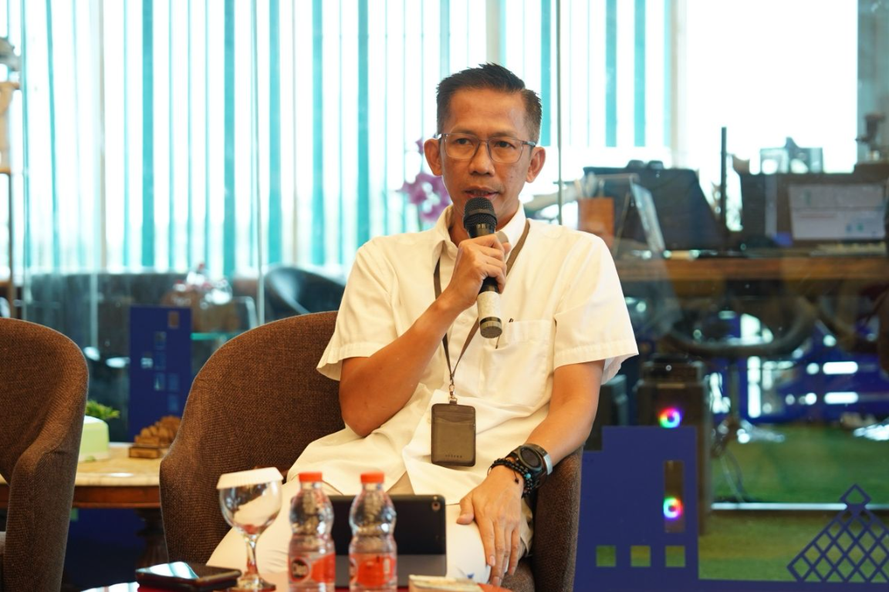
VERRY FIRMANSYAH
Wakil Ketua Umum Bidang Teknologi Informasi, Telekomonikasi & Digitalisasi
-
A.A RAKA BAGUS VINAYA
Wakil Ketua Umum Bidang Pangan, Agrobisnis & Kemaritiman
-
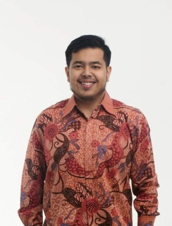
SEPTRIANTO MAULANA
Wakil Ketua Umum Bidang Pariwisata, MICE & Ekonomi Kreatif
-
Dra. M. ZETI ARINA, S.H., M.M., BKP
Wakil Ketua Umum Bidang Kebijakan Moneter, Fiskal, Perpajakan & Regulasi Ekonomi
-
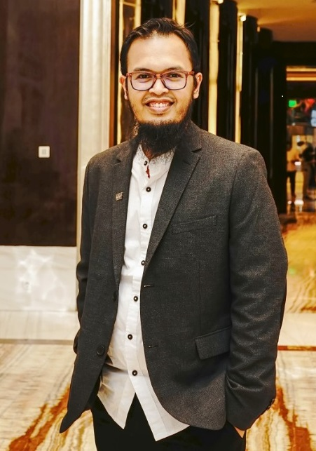
Prof. IMAN HARYMAWAN, SE., MBA., PH.D
Wakil Ketua Umum Bidang GCG, ESG & Sosial
-
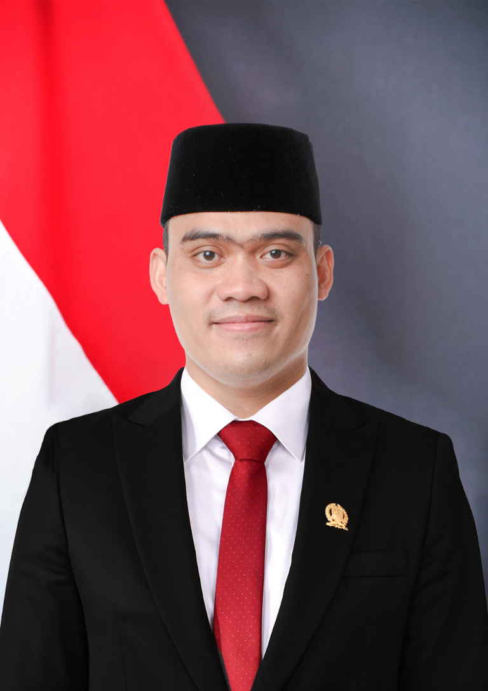
CAHYO HARJO PRAKOSO, SH., MH
Wakil Ketua Umum Bidang Hubungan Antar Lembaga, Kebijakan Publik, Kerjasama Ekonomi & BUMN/BUMD
-
Prof. Dr. ASRA AL FAUZI, SE., MM., SP.BS(K)., FICS, IFAANS
Wakil Ketua Umum Bidang Kebudayaan, Pendidikan & Kesehatan
-
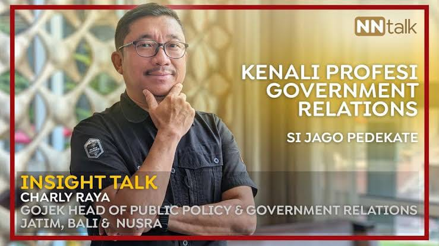
CHARLY RAYA
Wakil Ketua Umum Bidang Kerjasama Internasional
-
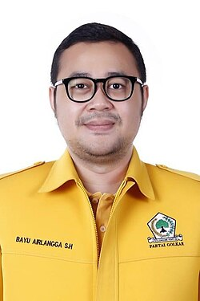
BAYU AIRLANGGA, S.H
Wakil Ketua Umum Bidang Hukum, Perizinan dan Regulasi
-
ARDERIO HUKOM, S.H., M.KN
Wakil Ketua Umum Bidang Pemberdayaan Pemuda, Komunitas & Olahraga
kepala badan
-
Didik Prasetyono
Pengembangan Kawasan Industri & Real Estate
-
Fiersa Erik Christian Cahyono
Percepatan Logistik
-
Ellinas Jalusamya Djatmiko
Pengembangan Pusat Perbelanjaan & Restoran
-
Mochammad Badowi, S.M., M.B.A
Riset & Pengembangan
-
Widia Prita Astria
Hubungan Masyarakat & Komunikasi
-
DRS. H. R. Soeharjanto, S.H.
Mediasi Sengketa Bisnis & Usaha
-
Drg. Edra Brahmantya Susilo, Sp.KG., M.M
Percepatan Pendidikan Vokasional & Kejuruan
-
Adam Syarief Thamrin, S.IIP., M.PSDM
Organisasi dan Keanggotaan / Direktur Eksekutif KADIN Kota Surabaya